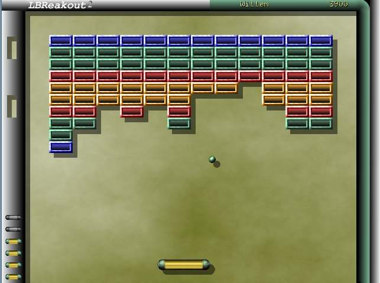
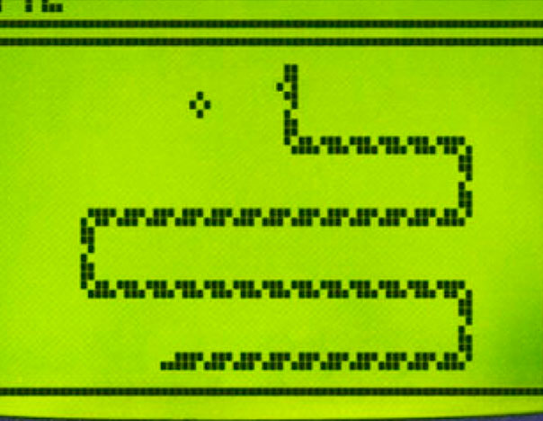
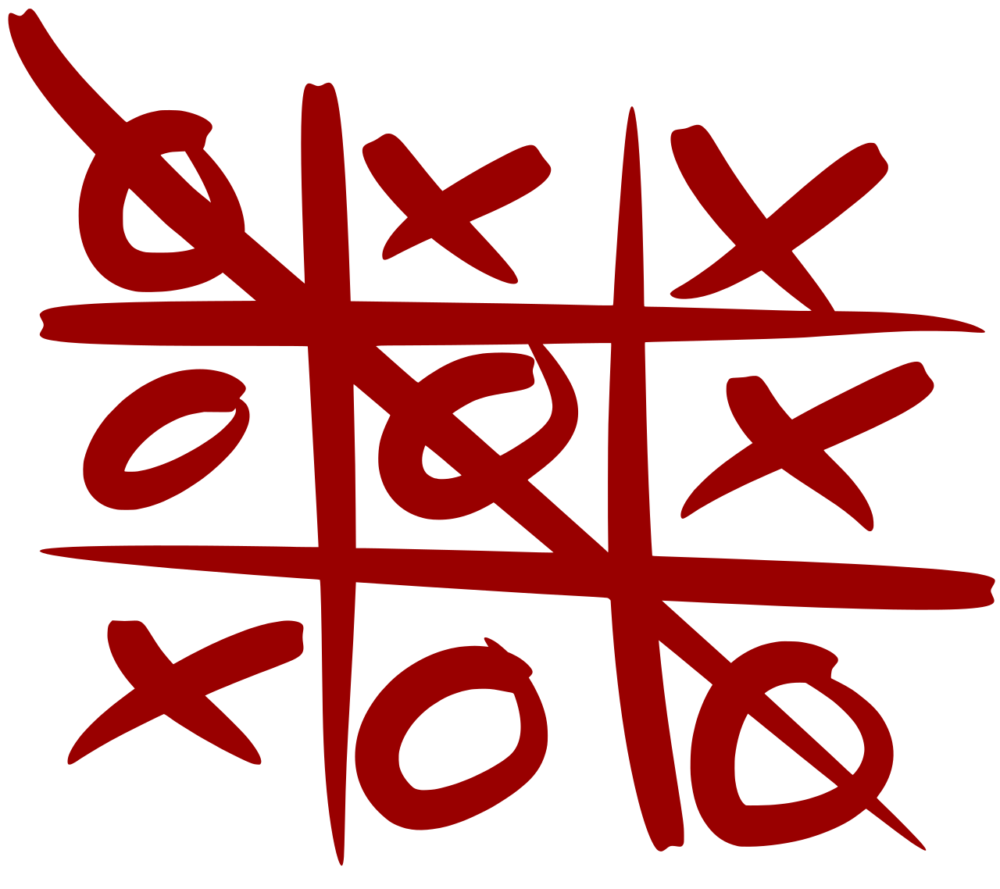

Pong

Descripción del juego:.
Un videojuego de consolas de primera generación publicado por Atari, creado por Nolan Bushnell y
lanzado el 29 de noviembre de 1972.Pong está basado en el deporte de tenis de mesa.
Jugar
Breakout

Descripción del juego BREAKOUT.
Breakout es un videojuego arcade desarrollado por Atari, Inc. y lanzado al mercado el 13 de
mayo de 1976.[1][2] Fue creado por Nolan Bushnell y Steve Bristow
Jugar
SnakeGame

Descripción del juego SNAKE.
Es un videojuego lanzado a mediados de la década de 1970.En 1998, el Snake obtuvo una
audiencia masiva tras convertirse en un juego estándar pregrabado en los teléfonos
Nokia.
Jugar
TicTacToe

Descripción del juego TICTACTOE.
Un 3 en 3, tambien conocido como tres en raya o "Gato", equis y circulos, etc
Jugar
Rock,Paper,
& Scissors

Descripción del juego
Rock, Paper,&
Scissors.
is an intransitive hand game, usually played between two people, in which each
player simultaneously forms one of three shapes with an outstretched hand. These
shapes are "rock" (a closed fist: ✊), "paper" (a flat hand: ✋), and "scissors"
(a fist with the index finger and middle finger extended, forming a V: ✌️)
Jugar
Pacman

Descripción del juego
Pacman .
Pac-Man fue lanzado el 22 de mayo de 1980,es un videojuego arcade creado por el diseñador de videojuegos Toru Iwatani de la empresa Namco, y distribuido por Midway Games al mercado estadounidense a principios de los años 1980.
Jugar
🎵 Special Thanks & Inspirations 🎵
Gracias a los artistas y compositores que han inspirado la creación de este proyecto con su música y creatividad. Sin su talento, este proyecto no sería lo mismo. :)
Bandai Namco Entertainment
la propietaria exclusiva de los derechos de autor y marcas registradas de Pac-Man a nivel mundial.
Robert F. Fox
Tomada de los soundtracks de
Undertale,
Kevin Penkin
Tomada de los soundtracks de
Made in Abyss Season 1,
Made in Abyss: Dawn of the Deep Soul, y
Made in Abyss Season 3.
Kohta Yamamoto & Hiroyuki Sawano
Tomada de los soundtracks de
Ao no Exorcist (Blue Exorcist).
Toshio Masuda
Tomada de los soundtracks de Mushishi.
Meme Sound Effects
Gracias a la cultura de internet y sonidos meme utilizados
para darle humor y personalidad al proyecto.
Pong
Descripción del juego:.
Un videojuego de consolas de primera generación publicado por Atari, creado por Nolan Bushnell y lanzado el 29 de noviembre de 1972.Pong está basado en el deporte de tenis de mesa.
Jugar
Breakout

Descripción del juego BREAKOUT.
Breakout es un videojuego arcade desarrollado por Atari, Inc. y lanzado al mercado el 13 de mayo de 1976.[1][2] Fue creado por Nolan Bushnell y Steve Bristow
Jugar
SnakeGame

Descripción del juego SNAKE.
Es un videojuego lanzado a mediados de la década de 1970.En 1998, el Snake obtuvo una audiencia masiva tras convertirse en un juego estándar pregrabado en los teléfonos Nokia.
Jugar
TicTacToe

Descripción del juego TICTACTOE.
Un 3 en 3, tambien conocido como tres en raya o "Gato", equis y circulos, etc
Jugar
Rock,Paper,
& Scissors
Descripción del juego Rock, Paper,& Scissors.
is an intransitive hand game, usually played between two people, in which each player simultaneously forms one of three shapes with an outstretched hand. These shapes are "rock" (a closed fist: ✊), "paper" (a flat hand: ✋), and "scissors" (a fist with the index finger and middle finger extended, forming a V: ✌️)
Jugar
Pacman
Descripción del juego Pacman .
Pac-Man fue lanzado el 22 de mayo de 1980,es un videojuego arcade creado por el diseñador de videojuegos Toru Iwatani de la empresa Namco, y distribuido por Midway Games al mercado estadounidense a principios de los años 1980. Jugar
🎵 Special Thanks & Inspirations 🎵
Gracias a los artistas y compositores que han inspirado la creación de este proyecto con su música y creatividad. Sin su talento, este proyecto no sería lo mismo. :)
Bandai Namco Entertainment
la propietaria exclusiva de los derechos de autor y marcas registradas de Pac-Man a nivel mundial.
Robert F. Fox
Tomada de los soundtracks de Undertale,
Kevin Penkin
Tomada de los soundtracks de Made in Abyss Season 1, Made in Abyss: Dawn of the Deep Soul, y Made in Abyss Season 3.
Kohta Yamamoto & Hiroyuki Sawano
Tomada de los soundtracks de Ao no Exorcist (Blue Exorcist).
Toshio Masuda
Tomada de los soundtracks de Mushishi.
Meme Sound Effects
Gracias a la cultura de internet y sonidos meme utilizados para darle humor y personalidad al proyecto.